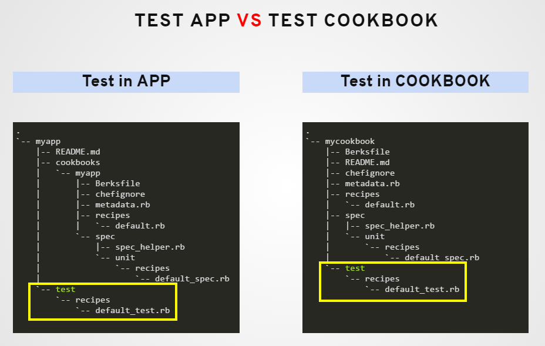

TDD with Test Kitchen
App test vs Cookbook Test

- Test configuration can be defined in two different places.
- One is inside app directory
myapp/test/recipes/default_test.rb - Another one is inside the cookbooks directory
myapp/cookbooks/mycookbook/test/recipes/default_test.rb
Inspec vs Serverspec
Creating test file
User Resource
- Add inspec user resource to check for
tomcat user
unless os.windows?
describe user('tomcat') do
it { should exist }
end
end
Port Resource
- Add inspec port resource to verify listening of port
8080 - Include protocols for
tcp6
describe port(8080) do
it { should be_listening }
its('protocols') { should include 'tcp6' }
end
Service Resource
- Add inspec service resource to verify
tomcat service - Include
installed,enabledandrunningconditions
describe service('tomcat') do
it { should be_installed }
it { should be_enabled }
it { should be_running }
end
Complete file of /workspace/myapp/test/recipes/default_test.rb is as follows
unless os.windows?
describe user('tomcat') do
it { should exist }
end
end
describe port(8080) do
it { should be_listening }
its('protocols') { should include 'tcp6' }
end
describe service('tomcat') do
it { should be_installed }
it { should be_enabled }
it { should be_running }
end